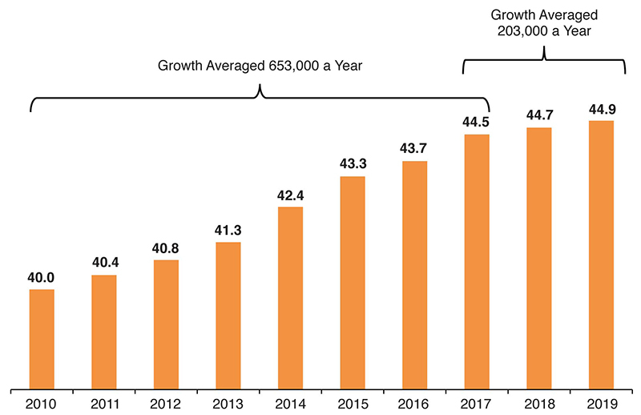

.png )
The foreign-born or immigrant population (legal and illegal) hit new record highs in March 2024 of 51.6 million and 15.6 percent of the total U.S. population. Since March 2022 the foreign-born population has increased 5.1 million, the largest two-year increase in American history
As of July 29, 2024, the world's population is estimated to be around 8.2 billion people, which is an increase of around 73 million people per year.
As of 2024, the world's population amounts to more than eight billion people, and is expected to reach around 10.4 billion people by the end of the century.
the overall U.S. population is projected to grow by 5% to 8% each decade. Immigrants contribute to population growth because of both their own numbers and their above-average fertility.
Migrants may be exploited. Increases in population can put pressure on public services. Unemployment may rise if there are unrestricted numbers of incomers. There may be integration difficulties and friction with local people.
How can immigration help us?
Filling workforce gaps and reducing inflation